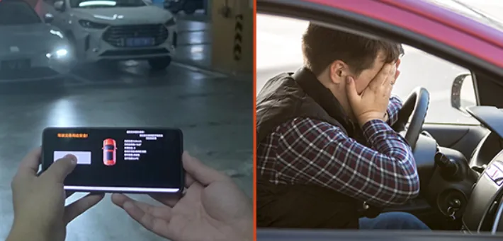
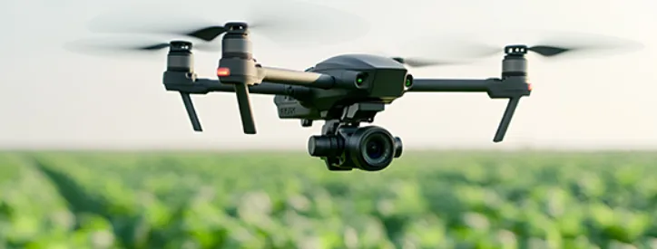

The new horizon is here-time to chase
your goals with renewed energy.
Voyager Tech is here to boost yourefficiency across ground intelligence,low-altitude economy, and servicerobotics. From stress-free parking tosmarter farming, we're the smart"sidekick" for your professional life.
Effortless ParkingStress-Free CommutesTired of narrow spots and awkward maneuversmaking your commute a headache?

VT-APA system uses deep learning to getsmarter" every time you use it.
Advanced multi-sensor fusion helps the carrecognize even the trickiest spots-likeultra-narrow spaces or dead-end alleys.
It doesn't just get you in; it ensures you'reparked smoothly and accurately.
Your Guardianon the Long Road
When the haul is long and the pressure is high,
how do you maintain your focus?

VT-DMS system uses millisecond-level trackingto monitor head position, eye gaze, and posture,detecting fatigue or distraction instantly
Powerful infrared technology ensures reliabletracking in all weather and lighting conditions.
VT-DMS meets (EU) 2019/2144 (GSR 2.0)regulations regarding DDAW/ADDW/Cybersecurityfor whole vehicle certification.
Smart Sensing
Across More Scene
VT-Camera Solutions equip industrial robotswith the latest embodied Al technology.
By combining machine vision with high-level Alalgorithms, we give robots the "instinct" tounderstand their environment, making complextasks feel easy.

VT-Camera tech acts as a "digital sentry" for
agricultural drones.
High-precision positioning and spatialalgorithms allow drones to navigate complexterrain with ease, turning traditional farminginto a high-tech, data-driven success.

Looking Ahead to 2026
We are standing side-by-side with you as we
innovate for the future. By breaking the
boundaries between ground intelligence,
low-altitude economy, and service robotics.
we continue to provide competitive solutions
for our global partners.